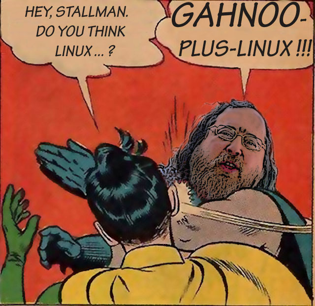

Linux¶
О системе¶
Введение¶
Linux - ядро ОС, разработка начата финским студентом Линусом Торвальдсом.
- Ядро - наиболее низкий уровень абстракции для доступа приложений к ресурсам системы, необходимым для их работы.
GNU/Linux - операционные системы, основанные на ядре Linux и системных библиотеках GNU (а часто и другом ПО)

Системы GNU/Linux распространяются на условиях лицензии особого рода, известной под названием GNU-лицензии (GNU General Public License, или GPL). Она устанавливает несколько условий на распространение и изменение свободного программного обеспечения. GNU-лицензия делает программное обеспечение свободно распространяемым, но не передаёт его в пользование обществу, а защищает права автора.
Согласно GNU программа свободна, если у ее пользователей есть четыре важнейших свободы:
- Свобода выполнять программу как вам угодно в любых целях (свобода 0).
- Свобода изучать работу программы и модифицировать программу, чтобы она выполняла ваши вычисления, как вы пожелаете (свобода 1). Это предполагает доступ к исходному тексту.
- Свобода передавать копии, чтобы помочь другим (свобода 2).
- Свобода передавать копии своих измененных версий другим (свобода 3). Этим вы можете дать всему сообществу возможность получать выгоду от ваших изменений. Это предполагает доступ к исходному тексту.
Ядро¶
Ядро Linux - очень большая программа, представляющая следующие функции:
Хранение данных:
- RAM - Чтение и запись данных в оперативную память.
- Постоянное хранение - Чтение и запись данных на постоянные запоминающие устройства.
- Виртуальная файловая система.
Доступ к сетям:
- Работа с физическими сетями (Ethernet, Wireless, LTE, коммутаторы, Bluetooth.
- Виртуальные сети.
Планирование задач:
- Совместное использование процессорного времени программами.
- Балансировка нагрузки процессора и приоритеты.
Поддержка внешних устройств:
- Съемные USB носители.
- Веб-камеры.
- Мыши и клавиатуры.
Безопасность:
- Права доступа к файлам для пользователей и групп;
- Разрешение доступа к ресурсам системы;
Спор об именовании¶
- Gnu.org
Операционные системы, основанные на ядре Linux и системных библиотеках GNU , часто называют просто Linux. Однако проект GNU настаивает на названии GNU/Linux. Особо сильно на это реагриуерт Ричард Мэттью Столлман(RMS), основатель движения свободного ПО и проекта GNU.
Линус Торвальдс, автор ядра Linux, на настойчивые требования Ричарда Столлмана поддержать его позицию всегда реагировал слабо, заявляя, что занимается разработкой программного обеспечения, а не политикой.
RMS:
Дистрибутивы¶
Дистрибутив GNU/Linux — общее определение операционных систем, использующих ядро Linux, представляющий собой настроенную систему с предустановленным комплектом приложений. У каждого дистрибутива свои правила и свое сообщество.
В настоящее время существует более шестисот дистрибутивов GNU/Linux; более половины из них поддерживаются в актуальном состоянии, что обеспечивается регулярным выпуском обновлений разработчиками дистрибутива.
Современные диструбутивы берут начало от трех старейших: Slackware, Debian, Red Hat.

{kind=link}
Применение¶
Благодаря возможностями трансформации и масштабирования Linux ее можно встретить во всех областях компьютерной техники.
- Лидер на рынке серверов.
- Лидер на рынке мобильных ОС (Ядро ОС Android - Linux).
- Лидер на рынке встраеваемых систем.
- Главный элемент кластеров и моделей распределенных вычислений.
- 100% суперкомпьютеров из ТОП-500 мира работают на Linux.
- Востребован наукоемкими специальностями благодаря высокой скорости вычислений.
Работа c cистемой¶
Графический интерфейс¶
Внешний вид cистемы очень близок к популярным Windows или Mac OS, поэтому новым пользователям не придется долго привыкать к системе. С другой стороны, под Linux существует множество графических оболочек на любой вкус, цвет и характеристики компьютера. Любую из них можно настроить до мелочей.
Консоль¶
Куда более интересная часть системы. Взаимодействуя с компьютером через консоль можно сделать все то же, что и через графический интерфейс, и даже много больше.
Терминал - это устройство, при помощи которого человек взаимодействуют с компьютером. Изначально в качестве терминалов применялись электромеханические телетайпы.
В большинстве современных компьютеров работа терминала эмулируется средствами ОС, позволяя работать с текстовыми приложениями, когда графическую оболочку запустить невозможно или не нужно. При запущенной же графической оболочке возможно использовать специальные приложения — эмуляторы терминала. Современный терминал и эмуляторы сейчас обобщенно называют консолями.
Взаимодейсвтие с компьютером осуществляется посредством команд, которые имеют следующий вид:
[название команды] <опции> [аргументы]

| Название | cowsay |
| Опции | -e99 |
| Аргумент | Hellow, world |
Некоторые команды требуют прав суперпользователя. На самом деле, большинство команд - это программы, все так же с открытым исходным кодом, который можно редактировать.
Файловая система. Права¶
Отдельно стоит упамянуть о файловой системе(ФС) и правах доступа. В отличие от Windows в GNU/Linux используется ФС ext4. Одним из основных ее отличий является поддержка прав доступа к файлам и папкам
Права бывают трех типов:
- Read(r) - чтение файлов или папок.
- Write(w) - запись в файл или папку.
- Execute(x) - запуск программ.
Правами могут обладать:
- Владелец файла или папки.
- Группа пользователей.
- Все остальные, не входящие в первые 2 группы.
Так выглядит полная информация о правах на файл в ФС ext4:
-rwx rw- r-- vladius wheel devyatka.cpp
Это значит, что права на файл devyatka.cpp распределены следующим образом:
| Роль | Объект | Права | Обозначение |
|---|---|---|---|
| Владелец | vladius | read/write/execute | rwx |
| Группа | wheel | read/write | rw- |
| Остальные | Все | read | r– |
Особый пользователь root называется суперпользователем и имеет безграничные права на любой файл.
Cтандарт иерархии файловой системы(FHS)¶
FHS предлагает следующую иерархию подкатологов в корневом /:
/bin - основные утилиты, необходимые как в однопользовательском режиме, так и при обычной работе всем пользователям.
/boot - неизменяемые файлы, необходимые для загрузки системы.
/dev - файлы устройств.
/etc - файлы конфигурации системы на данном компьютере.
/home - домашние каталоги пользователей.
/lib - основные разделяемые библиотеки и модули ядра.
/mnt - точку монтирования для временно подключаемых файловых систем.
/root - домашний каталог пользователя root.
/opt - дополнительное программное обеспечение..
/sbin - основные системные программы для администрирования и настройки системы.
/tmp - временные файлы.
/usr - вторичная иерархия для данных пользователя. Содержит большинство пользовательских приложений и утилит, используемых в многопользовательском режиме.
- /usr/bin - дополнительные программы для всех пользователей, не являющиеся необходимыми в однопользовательском режиме.
- Факт: Изначально /usr использовался для хранения домашних директорий. Когда стало нехватать места под bin, было решено создать пользователя bin.
/var - изменяемые файлы, такие как файлы регистрации, временные почтовые файлы.
Systemd¶
Systemd — подсистема инициализации Linux — демон (программа, работающая в фоне) для запуска других демонов в Linux и управления ими в процессе работы системы. Название происходит от принятого в Unix добавления суффикса -d к демонам.
Разработана Леннартом Поттерингом взамен используемого ранее демона init. В свое время вызвала огромное количество не утихающий до сих пор споров. Сейчас исользуется по умолчанию во всех популярных диструбутивах.
Помимо простого запуска и контроля сервисов, systemd предлагает некоторые другие удобные функции, для использования которых ранее системным администраторам приходилось прибегать к помощи дополнительных программ-демонов. Среди таких функций:
- Сокет-активация служб (заменяет inetd).
- Запуск сервисов по расписанию (заменяет cron).
- Работа с аппаратным сторожевым таймером (заменяет watchdog).
- Смена корня (заменяет chroot).
- Автомонтирование томов и сетевых ресурсов (заменяет mount и fstab).
- Удобная работа с логами посредством journald (заменяет syslog)
Установка приложений¶
В отличие от Windows и Mac OS на GNU/Linux строго не рекоммендуется скачивать приложения с сайтов, даже с официальных. Все приложения представлены в виде пакетов, которые хранятся в репозиториях вашего дистрибутива.
Чтобы установить пакет, нужно воспользоваться графической утилитой или пакетным менеджером (В каждом диструбитве свой, например, dnf в Fedora или apt в Debian/Ubuntu). Пример использования ищите ниже.
Список часто используемых команд с пояснением¶
Если хотите быстро понять, что делает команда, что означают ее опции и аргументы, зайдите на explainshell.com. К сожалению, ресурс заблокирован в России.
man¶
man <команда>- подробная информация о команде <команда>
pwd¶
pwd- текущая директория
cd¶
cd <директория>- сменить текущую директорию на <директория>- Директориями в GNU/Linux называются папки
~- домашняя директория пользователя
ls¶
ls- список файлов и папок в текущей директорииls -l- подробный список(включает права, владельца, группу, размер и время редактирования)ls -a- скрытые файлы и папки(которые начинаются с.)ls -la- две опции вместеls <дир>- список файлов в директории <дир>
touch¶
touch <файл>- создает файл <файл>
mkdir¶
mkdir <дир>- создает директорию <дир>mkdir -p <дир>- создает директорию <дир> и все вышележащиее директории- например,
mkdir -p /test/test2/test3- Создаст директории test, test2, test3
cp¶
cp <файл1> <файл2>- копировать <файл1> в <файл2>cp -r <дир1> <дир2>- копировать директорию <дир1> в <дир2>
mv¶
mv <1> <2>- переместить файл или директорию <1> в <2>
rm¶
rm <файл>- удаляет файл <файл>rm -rf <дир>- удаляет директорию <дир> и все ее содержимое
echo¶
echo <текст>- печатает <текст>echo <текст> > <файл>- заменяет содержимое файла <файл> текстом <текст>echo <текст> >> <файл>- добавляет текст <текст> в конец файла <файл>echo <текст> 1>&2- перенаправление stdout в stderr- Если целевого файла нет, он будет создан
cat¶
cat <файл>- печатает содержимое файла <файл>cat <файл1> > <файл2>- заменяет содержимое файла <файл1> содержимым <файл2>cat <файл1> >> <файл2>- добавляет текст файла <файл1> в конец файла <файл2>- Если целевого файла нет, он будет создан
ping¶
ping <хост>- проверить доступность <хост> в сети- Например,
ping school9.perm.ru - Чтобы остановить нажмите Ctrl-C
- Например,
ip¶
ip- позволяет выполнять настройку сетевой подсистемыip link- информация о сетевых интерйесахip addr- информация о сетевых интерйесах и адресахip route- таблица маршрутиризацииip neigh- текущая ARP-таблица(таблица соотвествия IP- и MAC-адресов)
useradd¶
useradd <пользователь>- создать пользователя <пользователь>useradd -m <пользователь>- создать пользователя и его домашнюю директорию(/home/<пользователь>)
passwd¶
passwd <пользователь>- задать пароль пользователю <пользователь>
su¶
su <пользователь>- авторизоваться под пользователем <пользователь>
sudo¶
sudo <команда>- выполнить команду <команда> от имени суперпользователя root- Требует права на использование.
- Не требует пароль root.
- Все команды логируются.
exit¶
exit- выйти/деавторизоваться
ps¶
ps- вывести список активных процессов текущего пользователяps -e- список всех активных процессов
htop¶
top- вывести в виде таблицы перечень запущенных процессов и оценить, какой объем ресурсов они потребляютhtop- аналогично. Более человеко-читаемый и удобный. Обычно используется вместоtop- Требуется пакет htop
kill¶
kill <pid>- отправляет сигнал процессу с идентификатором <pid>kill -s <сигнал> <pid>- отправляет процессу с идентификатором <pid> сигнал <сигнал>- Если не указана опция
-sотправит SIGTERM man signal.7- подробнее о сигналах
ssh¶
ssh <пользователь>@<хост>- удаленно подключиться к компьютеру <хост> и зайти под пользователем <пользователь>- SSH - сетевой протокол, позволяющий производить удалённое управление операционной системой
- Когда вы подключитесь к <хост>, увидите ту же консоль
ssh <пользователь>@<хост> -p <порт>- подключение к порту <порт>(если не указано, то используется 22)
scp¶
scp <файл> <пользователь>@<хост>:<дир>- отправить файл <файл> по протоколу SSH на компьютер <хост> под пользователем <пользователь> в директорию <дир>- Например,
scp task.xml root@cab13c1.linux.sch9.lan:/home/vasyan/ scp -r <дир1> <пользователь>@<хост>:<дир2>- то же самое для директории
- Например,
hostname¶
hostname- имя компьютера
Установка пакетов¶
dnf install <пакет>- установка пакета <пакет> пакетным менеджером dnfapt install <пакет>- установка пакета <пакет> пакетным менеджером aptpacman -S- установка пакета <пакет> пакетным менеджером pacman
Полезные комбинации клавиш¶
Не команды, но полезно знать
Ctrl-C- посылает запущенному в треминале процессу SIGINT (сигнал для остановки процесса)Ctrl-D- комбинация, которая отправляет в консоль EOF (End Of File). Работает схожим образом сexitCtrl-Z- отправляет процессу SIGSTOP (сигнал, посылаемый для принудительной приостановки выполнения процесса)- Для возобновления выполнения используется SIGCONT или команда
fg
- Для возобновления выполнения используется SIGCONT или команда